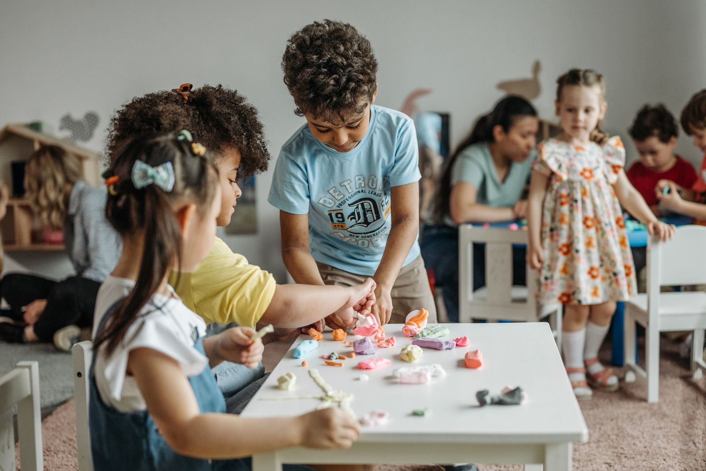
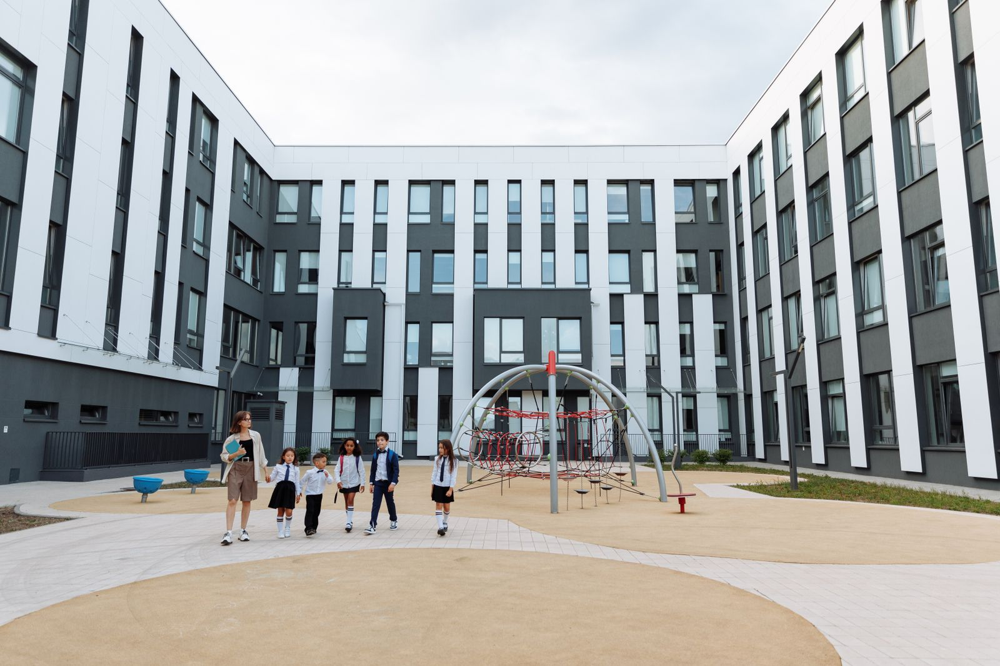
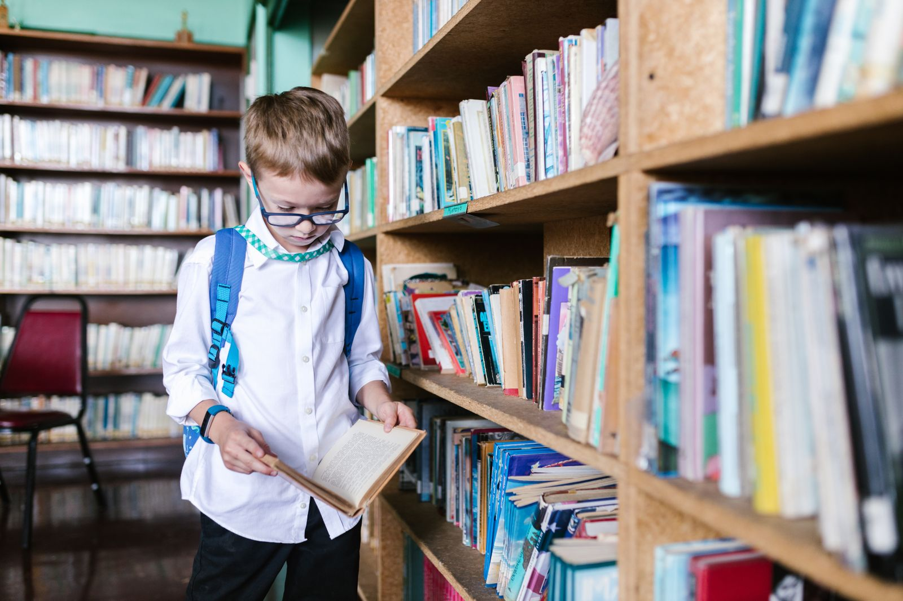
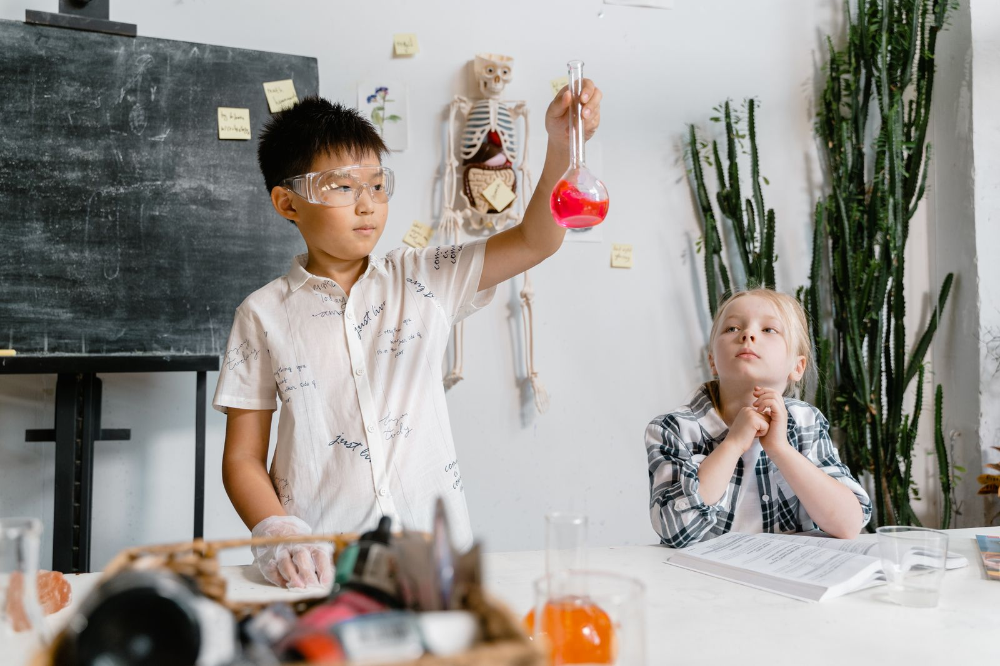
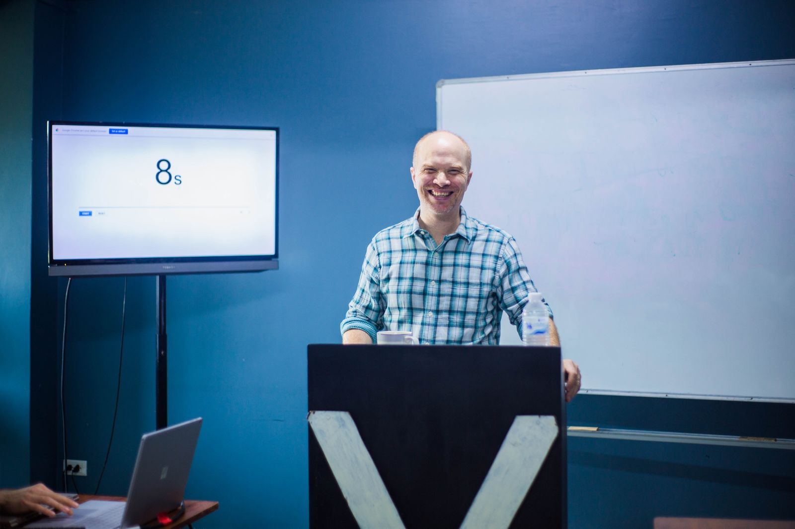
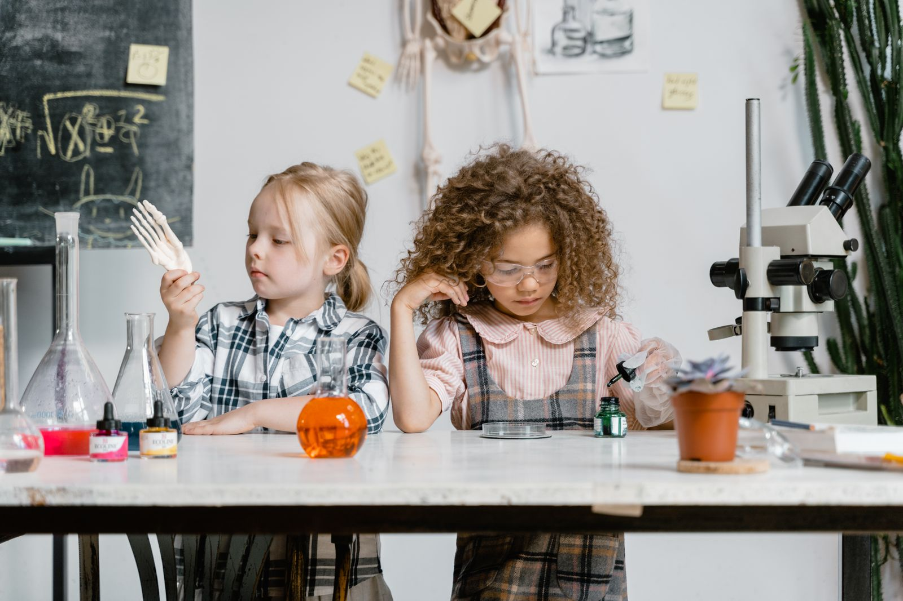
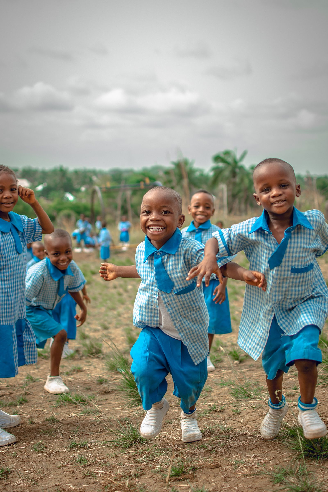
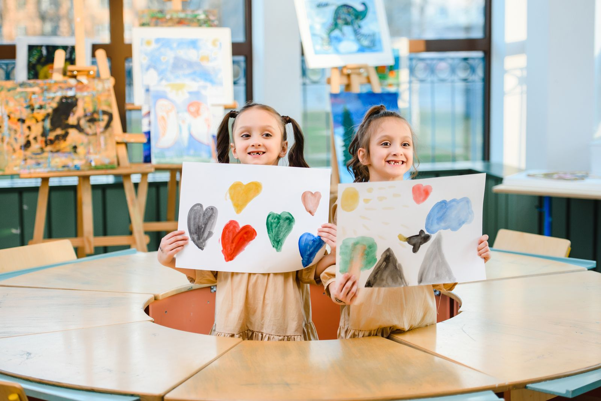

٣–٥ سنوات
رياض الأطفال
يوم مرن يقوم على اللعب الموجّه والحكاية والحركة، وانتقال هادئ من البيت إلى الجماعة.
تفاصيل المرحلة ←من الروضة إلى الثانوية · تعليم ثنائي اللغة
في الرّوافد نبني يومًا مدرسيًا متوازنًا: تأسيس أكاديمي رصين، وأنشطة تصنع الشخصية، ومعلمون يعرفون كل طالب باسمه.
فصول صغيرة ليتابع كل معلم تقدم كل طالب.

٠١مدرسة حيٍّ صغيرة، بقلب كبير
تأسست الرّوافد عام ٢٠١٢ لتكون مدرسة قريبة من أهلها: مبنى واحد مضيء، فناء أخضر، مكتبة مفتوحة، ومعملان للعلوم والحاسوب. نعلّم بالعربية والإنجليزية من الصف الأول، ونقيس النجاح بثقة الطالب قبل درجاته.
٠٢المراحل الدراسية الأربع
مسار واحد متصل من أول يوم في الروضة حتى مشروع التخرج.

يوم مرن يقوم على اللعب الموجّه والحكاية والحركة، وانتقال هادئ من البيت إلى الجماعة.
تفاصيل المرحلة ←
تأسيس قوي في القراءة والحساب والعلوم بلغتين، ومشروع صغير كل فصل يجمع المهارات.
تفاصيل المرحلة ←
مختبرات ونقاشات ومهام بحثية، ومعلم مرشد لكل مجموعة صغيرة يتابع النمو والسلوك.
تفاصيل المرحلة ←
مسارات علمي وأدبي، إرشاد جامعي مبكر، ومشروع تخرج يُعرض أمام لجنة خارجية.
تفاصيل المرحلة ←٠٣أسبوع مليء بالأنشطة
٠٥آخر أخبار المدرسة

١٤٠ مشروعًا طلابيًا بين الطاقة والمياه والروبوتات، ولجنة تحكيم من خارج المدرسة.

سباقات وتتابع وألعاب جماعية، وكأس المدرسة للروح الرياضية قبل المراكز.

ستون لوحة ومنحوتة في بهو المدرسة، والريع لنشاط الخزف.